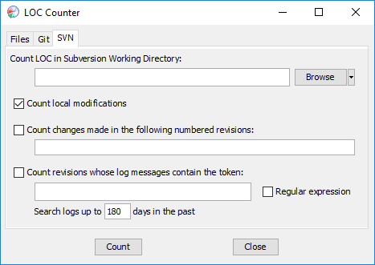
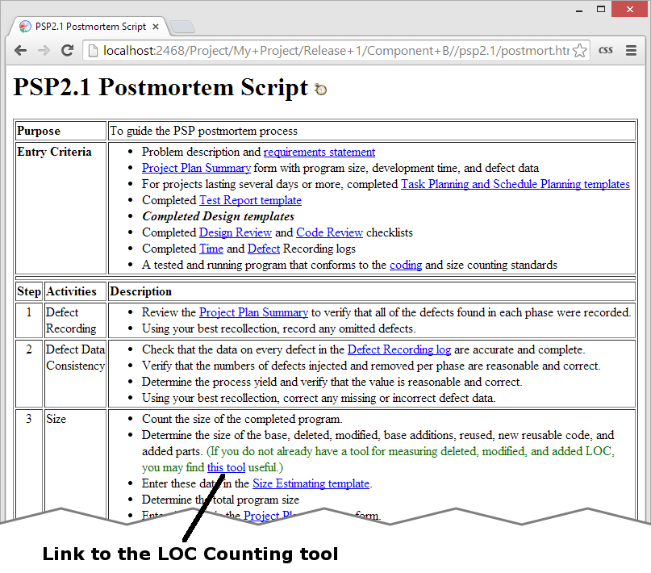
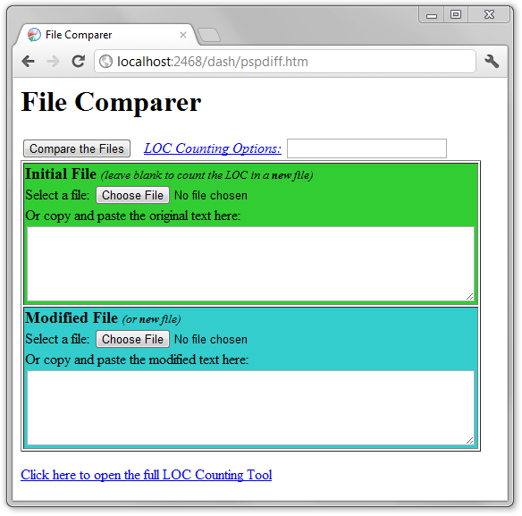

→ Tools" menu. The LOC
Counter Tool can count code in several different ways.
→ Tools" menu. The LOC
Counter Tool can count code in several different ways.Measuring size is an important step in the PSP Postmortem phase. If you don't pause in your project postmortem to measure the number of added, deleted, and modified LOC, you may forever lose the opportunity to capture these metrics. It only takes a few moments, and provides you with valuable data for future planning efforts.
You may already have a LOC counter that you use on a regular basis. (In fact, most people who complete the PSP training course write a LOC counter during the training.) If you do need a LOC counter, one is built into the dashboard.
You can access this LOC counter by selecting the appropriate option from
the " → Tools" menu. The LOC
Counter Tool can count code in several different ways.
The "Files" tab of the LOC Counter allows you to count LOC in a single file or in a directory. It also allows you to compare two different files or directories to see how many lines of code were added, modified, and deleted. Just select the appropriate option at the top, then select the files or directories in the fields below. Then press the Count button.

If you use subversion for version control of your source code, the "SVN" tab makes it easy to count the number of lines of code that were added, deleted, and modified by a particular set of changes. To begin, select the directory on your computer that contains your subversion working copy.

Then, several counting options are provided:
The options above can be used together: for example, to count the changes in several committed revisions as well as local modifications. After you have selected the desired options, press the Count button.
The LOC Counter Tool described above provides powerful options for LOC counting. For quick/simple counting needs, a web-based interface is also provided. You can open this web-based interface by pointing your web browser to http://localhost:2468/dash/pspdiff.htm.
In addition, a link to this LOC counter is included in the Postmortem scripts for PSP0.1 and up.

The web interface allows you to count a single file or compare two files to each other. For more sophisticated needs, a hyperlink at the bottom of the page is provided to open the full-featured LOC Counter Tool.

The web interface will alternatively allow you to copy and paste code snippets that should be counted or compared. When you do this, keep in mind that the counter can no longer examine your filenames (e.g. "foo.java" or "foo.cpp"), so it may not be able to guess which programming language syntax to use for the count. In that case, you may need to select an option from the "Language" field near the top of the form.
After using any of the tools above, the dashboard will generate a report showing the number of physical LOC that you have added, deleted, and modified. It also displays a "redlined" version of the modified files, which can be very useful for peer reviews.
When you use the full-featured LOC Counter Tool, the top of the report will also show summary tables listing the files that were added, modified, or deleted, with individual LOC counts for each file.
If you are using the PSP Size Estimating Template, you can drag items from the LOC Report summary tables and drop them onto rows of the Size Estimating Template. The actual LOC for the file in question will be applied to the target row in the Size Estimating Template. (This this feature is most useful if your conceptual design lists items at a file-level granularity or above. If you prefer to create separate rows in the Size Estimating Template for each added or modified method, you will need to perform your own manual accounting of the LOC for each Size Estimating row.) You can drag several items from the LOC report onto the same row of the Size Estimating Template, and the actual LOC contributions from each file will be summed. If you drop a file onto the wrong row, you can drag it to a different row or delete it entirely.
Entering actual LOC on the Size Estimating Template is a good way to improve your planning performance. As you apply the actual LOC to the rows of the Size Estimating Template, compare the actuals to your original plan. The differences can help you to understand the types of planning errors you typically make, which can help you to improve your plans in the future.
However, the data on the Size Estimating Template is not the official source of information for computing the size of a PSP program. The official source is the Actual Added and Modified field in the "Size" section of the PSP Project Plan Summary form.

The actual Added and Modified field is calculated from the values that appear in the actual Base, Deleted, Modified, Reused, and Total Size fields on the Project Plan Summary form. During postmortem, you should open the Project Plan Summary form and enter these values. This task is generally very fast and easy, because these aggregate numbers are readily available in a table near the top of the LOC Counter Report.
To receive good analyses from the PSP, it is very important for the "Actual Added and Modified" field to contain the right size. Therefore, you should always open the PSP Project Plan Summary form during the Postmortem phase of each PSP project and enter these values, even if you don't take the time to fill out the Actual columns of the Size Estimating Template.
Several configuration settings are provided to control the behavior of the LOC counter. For more information, see the Advanced Configuration Settings help topic.
The LOC counter that is built into the Process Dashboard is extendable to allow user defined LOC counting rules. For more information, see the custom LOC counter help topic.